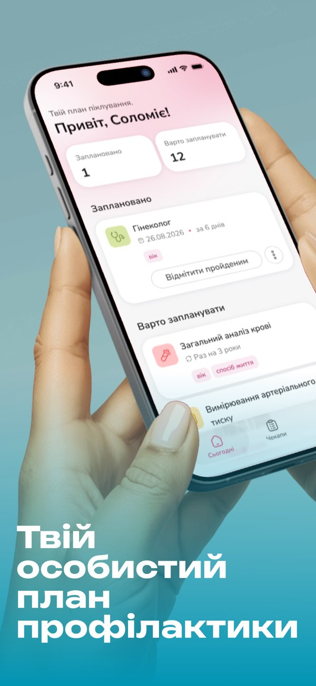
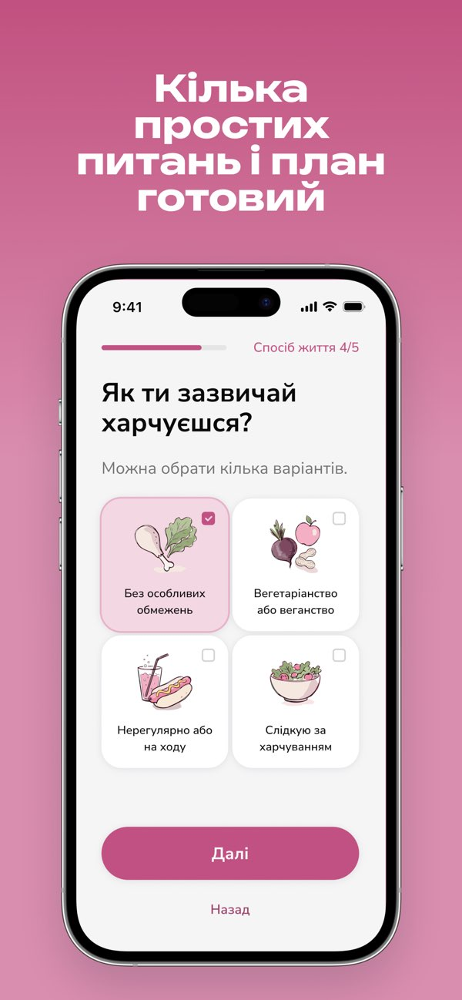
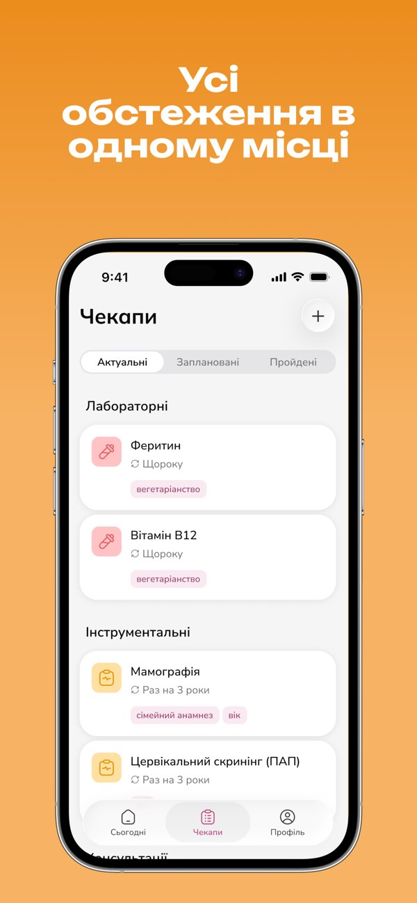
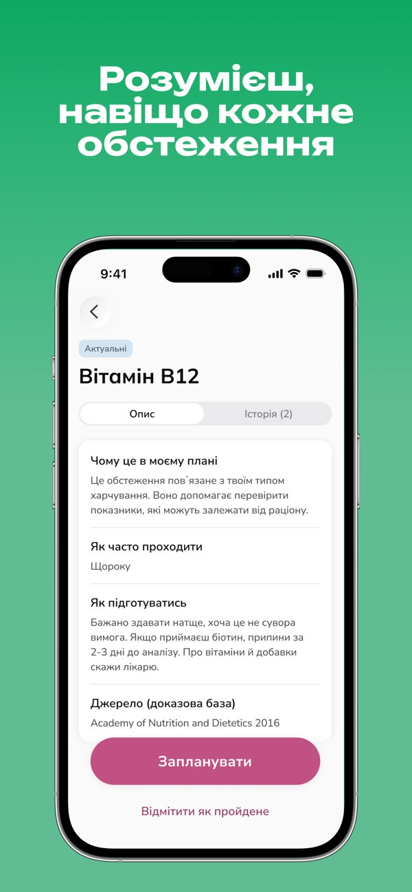
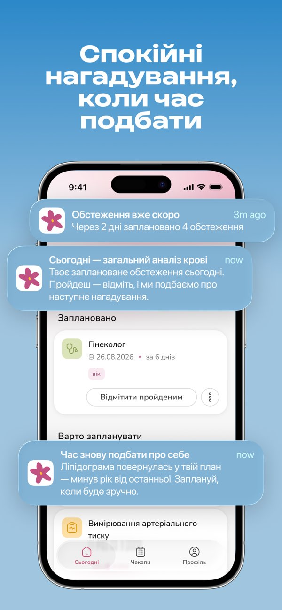
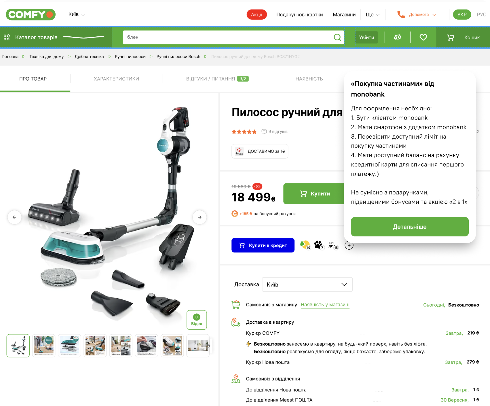
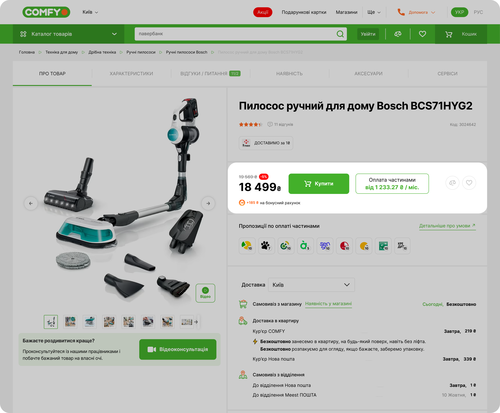
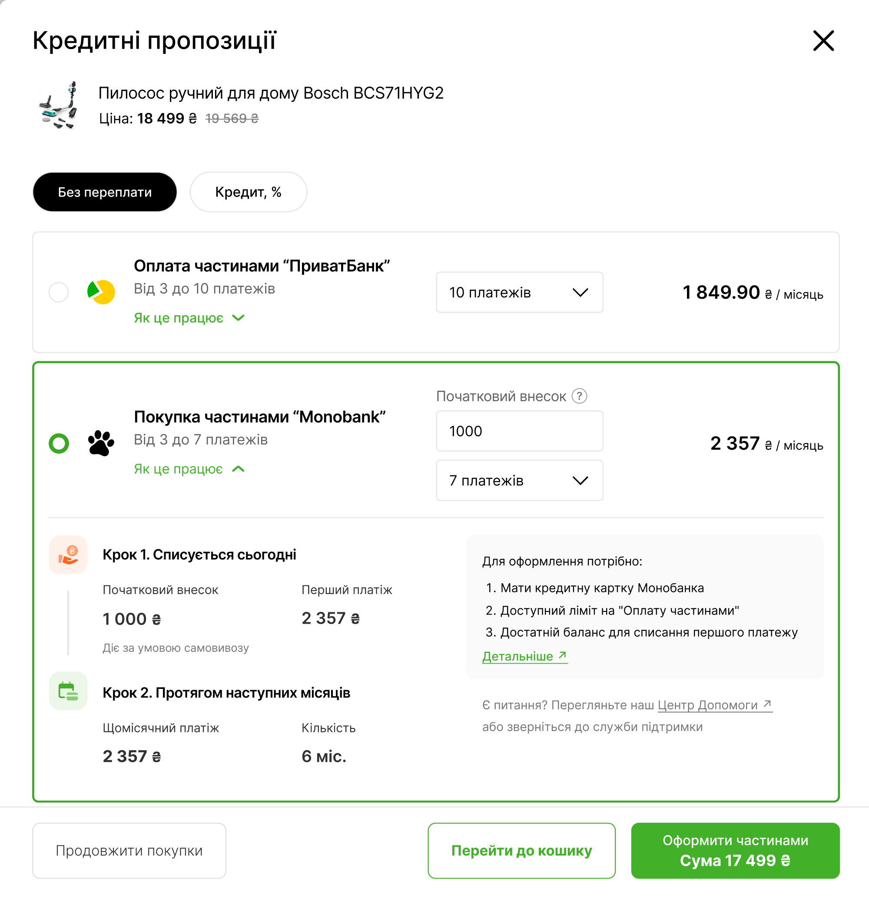
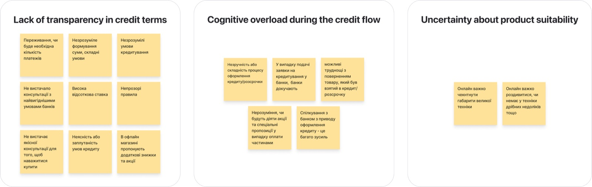

Designed, built, shipped.iOS live · Android in review
Prevently. From idea to App Store, solo.





Кожен компонент сайту на одному файлі стилів ui/kit.css; усі значення — змінні з :root. Опис і правила — у DESIGN.md, перелік — у ui/inventory.md. Кнопка «Тема» праворуч унизу перемикає світлу й темну. Попередній кіт — у docs/concept/v1/.
.top · .mark · .filter · .filter__btn[aria-pressed] · .theme
.bento · .tile (--w2, --h2, --h3) · .intro · .logo-tile · .text-tile · .case-tile (--brand, --side, --small) · .vis (--inset, --bare, --stage) · .sel · .cursor. Друга плитка показує виділення Figma статично (.is-selected); наживо воно з'являється при наведенні й фокусі.
I design intuitive interfaces for mobile and web, B2B and B2C.
LeraDesigned, built, shipped.iOS live · Android in review





30% → 40%credit order share, business goal



Lera · needs improvementA click on a bank icon only shows general info, nothing about this purchase.
Lera · design decisionNot “Buy on credit”: that word made people anxious. Now it’s “Pay in installments”, with the monthly price.
Lera · design decision“How it works” opens a clear timeline: what’s charged today, then every month.
Detailed component specs.
Ad Requests · eCPMwhat users check every day
“I connected my accounts… and then what?”a user, before the redesign
.pill · .minis · .mini
.float-btn · .case-hero · .prose · .facts · .proof-block · .stats · .quote · .insight · .hyp · .fig · .fig-row · .lists · .table · .note · .case-end
Lera · needs improvementA click on a bank icon only shows general info, nothing about this purchase.
Lera · design decisionNot “Buy on credit”: that word made people anxious. Now it’s “Pay in installments”, with the monthly price.
Lera · design decision“How it works” opens a clear timeline: what’s charged today, then every month.
Making credit purchases clear and calm for Ukraine’s largest retailer of home appliances and electronics.
Desk research, competitors, interviews.
“I didn’t read the terms, like everyone who doesn’t read the small print.”
“I want to track my subscriptions, not every cup of coffee.”
They cared about regular commitments.
If we show upcoming charges,
Then users can plan expenses,
Because they get clarity.
This will lead to more trust.
Mixpanel: Upcoming_Widget_Clicked
640 × 203

| Metric | Comfy today | Iteration 2 |
|---|---|---|
| Completion rate | 75% | 100% |
Note: small print in Pencil.
.curtain · .curtain__word — лише при першому відвідуванні.